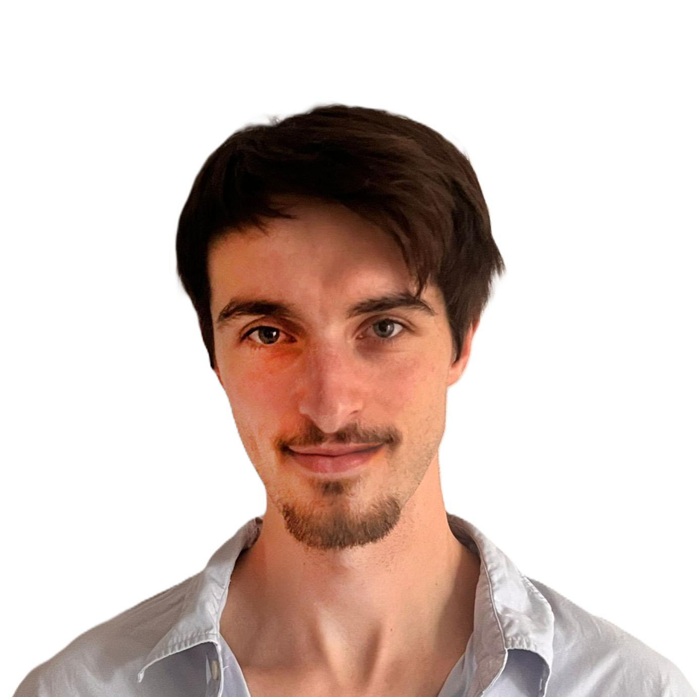

2019eLife
DeepFly3D, a deep learning-based approach for 3D limb and appendage tracking in tethered, adult Drosophila ↗
S. Günel, H. Rhodin, D. Morales, J.H. Campagnolo, P. Ramdya, P. Fua
I study how brains and behaviour respond to stress, and build computational tools to make sense of biological data.
PhD-trained neuroscientist with a background in biomedical engineering.

PhD research
Behaviour · Whole-brain activity
MSc research / EPFL
Pose · Unsupervised learning
Independent research tool
Clinical trials · NLP
Teaching
Models · Practical materials
S. Günel, H. Rhodin, D. Morales, J.H. Campagnolo, P. Ramdya, P. Fua
J.H. Campagnolo, E. Ahmad, R. Selvan, F. Kermen
J.H. Campagnolo, L.P. Rigola, J.L. Korn, R. Selvan, F. Kermen
I am a neuroscientist with a background in Biomedical Engineering and Biophysics. I completed my PhD in Neuroscience at the University of Copenhagen, where I worked in Florence Kermen's lab on the neural correlates of stress resilience in larval zebrafish. My doctoral work combined behavioral assays, whole-brain activity mapping, multivariate statistics, and scientific programming to study how brains recover from acute stress.
Before that, I carried out my master's thesis at EPFL in Pavan Ramdya's lab, where I worked on unsupervised quantification of behavior in Drosophila melanogaster. Across these research settings, I have moved between experiment and computation: behavior quantification, imaging data, machine learning, statistical analysis, and building tools that make scientific questions easier to handle.
I am particularly interested in computational and systems neuroscience, active inference, and machine learning methods applied to biological and biomedical data. I also enjoy independent projects that sit slightly outside my formal research path, from clinical-trial NLP work such as PillProphet to smaller side projects that are somewhere between useful, curious, and unnecessarily committed.
Also: cinema, cycling, football, history, and tennis.